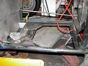
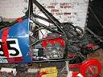

Dowson Racing - Formula Vee

January has been a busy month. The rebuild of the engine has been making steady progress. We received a box of parts from John Bowles containing
  All the bits were needed for the rebuild. They were duly put into the engine and it put back together. The engine is back into the car (see picture right) The sump we used last year protruded out from the floor pan. At Snetterton I must have hit it on a kerb and we had to weld it up at the meeting. The new sump from John Bowles doesn't stick out and is more robust. The sturdiness of the sump has encouraged Ian to chop out some of the floorpan in the engine bay. It saves a kilo (see picutre left)
The banning of Halon extinguisher system has meant purchasing a new system. The extinguisher section of the Demon Tweeks catalogue was studied in detail over Christmas. The cheapest system (extinguisher, pipping, nozzles and pull cables) is 103 quid plus VAT price minus the 750 MC 10% discount = 109 quid. Just when it looked like Demon Tweeks was going to get the cash, Ian stumbled on a company called Rally Design. Same system for 84.50 plus VAT = 99 quid. Rally Design the winner and looking through their catalogue it looked like more of our cash would be going their way. Check out their website - www.raldes.co.uk The temperature guage on the car had not worked from day one. Rally Design to the rescue with a gauge and sender - 23 plus VAT. My parents kindly offered to buy a quick release wheel hub - 42 plus VAT. Should make getting in and out of the car easier.
The parts arrived and Ian discovered a little size difference between the old and new fire extinguisher. While investigating extinguishers we discovered they are supposed to be sent back every 2 years to be checked - not unreasonable. Ours has not been off the car for 4 years. It could/would have failed scrutineering. The old one fitted with a couple inches to spare. The new one doesn't. Its meant moving it to the other side of the car so the handle doesn't interfere with the gearchange.
The timing transponder arrived in the post. In a bid to reduce timekeeping costs and also for more accurate timings (?), maybe even some printed lap times (I/we hope), the club has moved to using transponders. Ian attached it to the front of the car, just behind the front suspension. We figured that if 2 Vees were racing to the finish line the position of the transponder would matter. The closer to the front the better. But after reading the 750MC Bulletin I don't think it matters. Apparently the transponder will only be used for identification and the timing will be done by beam. The system will be tested at the Mallory test session (which I booked us in for the afternoon). So we'll find out a bit more then.
Over Christmas Ian had the petrol tank out. We flirted with the idea of purchasing an aluminium tank. The steel tank we have weighs about 3.5 kilos. A future upgrade perhaps. The old steel one was cleaned and put back in this month.
Other jobs done - Refit the battery box because it came a bit loose at the last race of the season. A new battery box has been built and its now more secure. Another small job was to fit some foam cushion into the seat. After a days racing I would usually go home with a few bruises on my back. Nothing uncomfortable but hey why live like animals. A thin bit of foam and we've made a recaro seat.
On the admin side, I contacted Demon Tweeks to register for their sponsorship scheme. I am waiting to find out if I am in or out. The scheme involves putting Demon Tweeks stickers on the car and if a photograph of the car appears in one of the selected magazine (autosport, motoring news etc) AND we send it in, we can claim an 150 pound voucher to spend at Demon Tweeks. Its unlikely we are going to net anything but it’s worth a go. Also this month I renewed my racing license. I thought it would be simply ticking a few boxes and send a cheque but under the health questions it asked about head injuries. I was knocked of my bike recently and was knocked unconscious. As I suspected I didn't need to go for any further medical and my license arrived. I also renewed my car insurance. I insure the car for theft. The garage I keep the car is a fairly safe lookup on a housing estate in Southall. For piece of mind I pay the 150 pound premium. It also insures me against theft at race circuits or whilst traveling to the circuit etc.
Over the Christmas period I caught up on some magazine reading and every magazine seemed to have ads for driver coaching. I am painfully aware that I am not the best driver and have toyed with the idea of getting some professional help to improve my driving. I sent for some information from the Silverstone race school since they had a nice cut out form in the RAC magazine. It took a few weeks to arrive but when it did I found it very interesting. 175 pounds buys 50 minutes tuition in one of their Protons. What caught my eye is the 5 day training course. It was formerly the Jim Russell course they ran at Donnington park about 5 years ago. I always fancied doing it but was put off by the price. When I last looked it was £2,400 (about 4 years ago) and I couldn't afford it. I ended up doing the one day course for £400 (now £475). 4 years later the price is £2,350. So the price is back to effectively its 1999 levels. The only catch (if you call it that) is the end of course race is not in one of the latest Formula Fords but a Formula First. This doesn't matter to me since I not going to race Formula Ford (certainly not for the foreseeable future).
It reminds me of an article I read in the European GP programme a few years back. When Frentzen joined Jordon after Williams dumped him, he had spent the previous winter at a driving school. I thought that was fairly ballsy for a F1 driver to admit he had gone to a driver's school. He also claimed he would be going back that winter saying "We never stop learning". Indeed.
I am a tall person. 6ft 4 inches. 1 inch more than the flying giraffe (Justin Wilson). Another Rotherham lad who has done slightly better than me (so far). He had problems fitting into a F1 car. So I will have real difficulties. I guess that's my potential F1 career over before it has begun. Anyway in my Vee I fit in OK and my head is just below the roll bar. I've checked using a plank of wood to confirm that if I turned over the car wouldn't end resting on my head/neck. But one problem that we haven't addressed up until now is the fact I get a gale force wind hitting my helmet. There's quite a bit of buffeting especially on the long straights of Snetterton, Donnington or Silverstone. Now I am no aero dynamist but I know a man who is. Well an organisation - NASA check out (www.nas.nasa.gov/About/Education/Racecar/futuredesigns.html). Also when it rains it means I get a visor full of water. When it rains I normally put on a very makeshift deflector. Now to put on something more permanent and hopefully improve those aerodynamics. I bought some 1mm thick plastic sheeting and have cut out a windshield. All I need to do now is attach it the bodywork using a few self tapping screen. Hopefully we will shoot down the straights another 10mph quicker.....
At Snetterton last year, a company was offering to install video cameras on cars and record in-car footage. I found a website offering the same extremely small cameras they were using - www.rfconcepts.co.uk/helmet_cameras.htm. Priced at about 88 + VAT but you need something to record the images. Anything with an AV IN will do but I haven't been able to find any cheap cameras with AV Ins.
Finally I picked up a copy of Race Tech. It had 3 really good articles. One on Vee or to more precise Jeremy Clark's Vee and its zero roll rear suspension, the author was also singing the praises of Vees. Also a great article on corner weights. The author described how its possible to measure the corner weights more accurate (or at least with the same accuracy) then any £1,200 set of digital scales. Its uses some wooden wheels, a metal bar with a pivot in the centre, a spirit level and a length of wood. The bright ones might be able to workout how to make it. If you not bright (like me) then get the Jan issue of Race Tech. The last article was about the Race-Technology DL90 Datalogger.It got the thumbs up and it only costs 499 pounds + VAT.
{kind=link}
{kind=link}
{kind=link}
{kind=link}
{kind=link}
{kind=link}